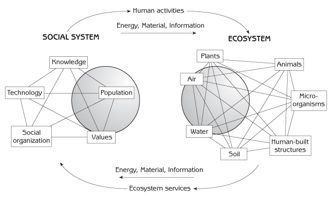
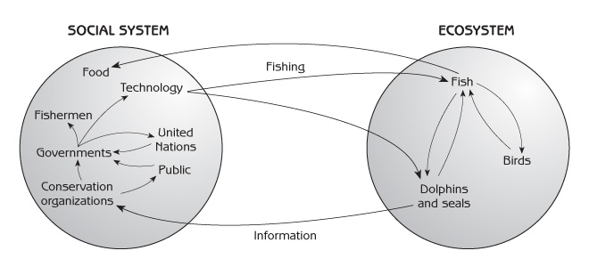
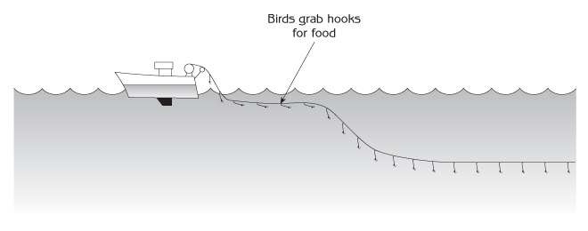
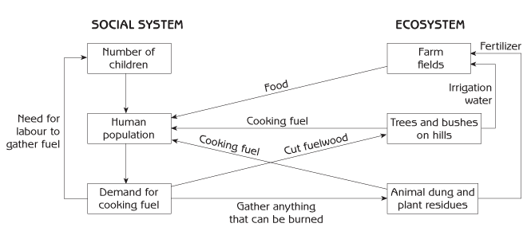
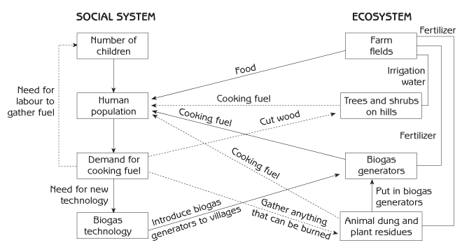
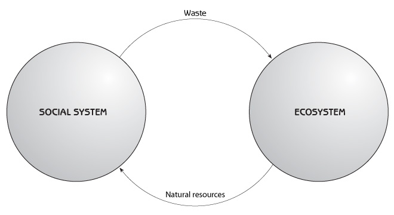

Human Ecology
Basic Concepts for Sustainable Development
Author: Gerald G. Marten
Publisher: Earthscan Publications
Publication Date: November 2001, 256 pp.
Paperback ISBN: 1853837148
Hardback ISBN: 185383713X
← View the full Table of Contents.
Chapter 1 Introduction
What is Human Ecology?
Ecology is the science of relationships between living organisms and their environment. Human ecology is about relationships between people and their environment. In human ecology the environment is perceived as an ecosystem (see Figure 1.1). An ecosystem is everything in a specified area - the air, soil, water, living organisms and physical structures, including everything built by humans. The living parts of an ecosystem - microorganisms, plants and animals (including humans) - are its biological community.
Ecosystems can be any size. A small pond in a forest is an ecosystem, and the entire forest is an ecosystem. A single farm is an ecosystem, and a rural landscape is an ecosystem. Villages, towns and large cities are ecosystems. A region of thousands of square kilometres is an ecosystem, and the planet Earth is an ecosystem.
Although humans are part of the ecosystem, it is useful to think of human - environment interaction as interaction between the human social system and the rest of the ecosystem (see Figure 1.1). The social system is everything about people, their population and the psychology and social organization that shape their behaviour. The social system is a central concept in human ecology because human activities that impact on ecosystems are strongly influenced by the society in which people live. Values and knowledge - which together form our worldview as individuals and as a society - shape the way that we process and interpret information and translate it into action. Technology defines our repertoire of possible actions. Social organization, and the social institutions that specify socially acceptable behaviour, shape the possibilities into what we actually do. Like ecosystems, social systems can be on any scale - from a family to the entire human population of the planet.

The ecosystem provides services to the social system by moving materials, energy and information to the social system to meet people’s needs. These ecosystem services include water, fuel, food, materials for clothing, construction materials and recreation. Movements of materials are obvious; energy and information are less so. Every material object contains energy, most conspicuous in foods and fuels, and every object contains information in the way it is structured or organized. Information can move from ecosystems to social systems independent of materials. A hunter’s discovery of his prey, a farmer’s observation of his field, a city dweller’s assessment of traffic when crossing the street, and a refreshing walk in the woods are all transfers of information from ecosystem to social system.
Material, energy and information move from social system to ecosystem as a consequence of human activities that impact the ecosystem:
- People affect ecosystems when they use resources such as water, fish, timber and livestock grazing land.
- After using materials from ecosystems, people return the materials to ecosystems as waste.
- People intentionally modify or reorganize existing ecosystems, or create new ones, to better serve their needs.
With machines or human labour, people use energy to modify or create ecosystems by moving materials within them or between them. They transfer information from social system to ecosystem whenever they modify, reorganize, or create an ecosystem. The crop that a farmer plants, the spacing of plants in the field, alteration of the field’s biological community by weeding, and modification of soil chemistry with fertilizer applications are not only material transfers but also information transfers as the farmer restructures the organization of his farm ecosystem.
An example of social system - ecosystem interaction: destruction of marine animals by commercial fishing
Human ecology analyses the consequences of human activities as a chain of effects through the ecosystem and human social system. The following story is about fishing. Fishing is directed toward one part of the marine ecosystem, namely fish, but fishing has unintended effects on other parts of the ecosystem. Those effects set in motion a series of additional effects that go back and forth between ecosystem and social system (see Figure 1.2).
Drift nets are nylon nets that are invisible in the water. Fish become tangled in drift nets when they try to swim through them. During the 1980s, fishermen used thousands of kilometres of drift nets to catch fish in oceans around the world. In the mid 1980s, it was discovered that drift nets were killing large numbers of dolphins, seals, turtles and other marine animals that drowned after becoming entangled in the nets - a transfer of information from ecosystem to social system, as depicted in Figure 1.2.

When conservation organizations realized what the nets were doing to marine animals, they campaigned against drift nets, mobilizing public opinion to pressure governments to make their fishermen stop using the nets. The governments of some nations did not respond, but other nations took the problem to the United Nations, which passed a resolution that all nations should stop using drift nets. At first, many fishermen did not want to stop using drift nets, but their governments forced them to change. Within a few years the fishermen switched from drift nets to long lines and other fishing methods. Long lines, which feature baited hooks hanging from a main line often kilometres in length, have been a common method of fishing for many years. The long lines that fishermen now use put a total of several hundred million hooks in the oceans around the world.
The drift net story shows how human activities can generate a chain of effects that passes back and forth between social system and ecosystem. Fishing affected the ecosystem (by killing dolphins and seals), which in turn led to a change in the social system (fishing technology). And the story continues today. About six years ago it was discovered that long lines are killing large numbers of sea birds, most notably albatross, when the lines are put into the water from fishing boats. Immediately after the hooks are reeled from the back of a boat into the water, birds fly down to eat the bait on hooks floating behind the boat near the surface of the water (see Figure 1.3). The birds are caught on the hooks, dragged down into the water and drown. Because some species of birds could be driven to local extinction if the killing is not stopped, governments and fishermen are investigating modifications to long lines that will protect the birds. Some fishermen are using a cover at the back of their boat to prevent birds from reaching the hooks, and others are adding weights to the hooks to sink them beyond the reach of birds before the birds can get to them. It has also been discovered that birds do not go after bait that is dyed blue.

This story will continue for many years as new effects go back and forth between the ecosystem and social system. Another part of the story concerns seals and other fish-eating animals that may be declining to extinction in some areas because heavy fishing has reduced their food supply. The effects can reverberate in numerous directions through the marine ecosystem. It appears that the decline of seals in Alaskan coastal waters is responsible for the disappearance of impressive kelp forests in that region. Killer whales that previously preyed on seals have adapted to the decline in seals by switching to sea otters, thereby reducing the sea otter population. Sea urchins are the principal food of sea otters, and sea urchins eat kelp. The decline in sea otters has caused sea urchins to increase in abundance, and the urchins have decimated kelp forests that provide a unique habitat for hundreds of species of marine animals. (Another episode in the story of commercial fishing and marine animals is presented at the end of Chapter 11.)
Cooking fuel and deforestation in India
The problem of deforestation in India provides another example of human activities that generate a chain of effects back and forth through the ecosystem and social system. The following story shows how a new technology (biogas generators) can help to solve an environmental problem.
For thousands of years people in India have cut branches from trees and bushes to provide fuel for cooking their food. This was not a problem as long as there were not too many people; but the situation has changed with the radical increase in India’s population during the past 50 years (see Figure 1.4). Many forests have disappeared in recent years because people have cut so many trees and bushes for cooking fuel. Now there are not enough trees and bushes to provide all the fuel that people need. People have responded to this ‘energy crisis’ by having their children search for anything that can be burned, such as twigs, crop residues (bits of plants left in farm fields after the harvest) and cow dung. Fuel collection makes children even more valuable to their families, so parents have more children. The resulting increase in population leads to more demand for fuel.

Intensive collection of cooking fuel has a number of serious effects in the ecosystem. Using cow dung as fuel reduces the quantity of dung available for use as manure on farm fields, and food production declines. In addition, the flow of water from the hills to irrigate farm fields during the dry season is less when the hills are no longer forested. And the quality of the water is worse because deforested hills no longer have trees to protect the ground from heavy rain, so soil erosion is greater, and the irrigation water contains large quantities of mud that settles in irrigation canals and clogs the canals. This decline in the quantity and quality of irrigation water reduces food production even further. The result is poor nutrition and health for people.
This chain of effects involving human population growth, deforestation, fuel shortage and lower food production is a vicious cycle that is difficult to escape. However, biogas generators are a new technology that can help to improve the situation. A biogas generator is a large tank in which people place human waste, animal dung and plant residues to rot. The rotting process creates a large quantity of methane gas, which can be used as fuel to cook food. When the rotting is finished, the plant and animal wastes in the tank can be removed and put on farm fields as fertilizer.
If the Indian government introduces biogas generators to farm villages, people will have methane gas for cooking, so they no longer need to collect wood (see Figure 1.5). The forests can grow back to provide an abundance of clean water for irrigation. After being used in biogas generators, plant and animal wastes can be used to fertilize the fields, food production will increase, people will be better nourished and healthier, and they will not need a large number of children to gather scarce cooking fuel.

However, the way that biogas generators are introduced to villages can determine whether this new technology will actually provide the expected ecological and social benefits. Most Indian villages have a few wealthy farmers who own most of the land. The rest of the people are poor farmers who own very little, if any, land. If people must pay a high price for biogas generators, only wealthy families can afford to buy them. Poor people, who do not have biogas generators, will earn money by gathering cow dung to sell to wealthy people for their biogas generators. Poor people may not care much about the ecological benefits from biogas generators because a better supply of irrigation water offers the greatest benefits to wealthy farmers who have more land.
As a consequence, the benefits from biogas generators could go mainly to the wealthy, widening the gap between the wealthy and the poor. Poor farmers, who see few benefits for themselves, might continue to destroy the forests, and the community as a whole might receive little benefit from the new technology. To improve the situation, it is important to make sure that everyone can obtain a biogas generator. Then everyone will enjoy the benefits, and the vicious cycle of fuel scarcity and deforestation will be broken.
Sustainable Development
Unintended consequences such as the ones in the story about fishing and marine animals are not unusual. Many human activities impact the environment in ways that are subtle or inconspicuous or involve changes that are so slow that people do not notice what is happening until the problem is serious. Problems may appear suddenly, and sometimes at a considerable distance from the human actions that cause them.
Minamata disease is a typical example of an unintended consequence. Until the 1960s, mercury was widely used for industrial processes such as paper and plastics production. Plastic factories in Japan’s Minamata region routinely dumped mercury waste into the adjacent coastal waters. Though mercury was known to be highly toxic, no one worried because the ocean was so large. However, bacteria around factory outlets were transforming the mercury into even more toxic methane mercury, which accumulated year after year in the coastal ecosystem. The mercury was biologically concentrated as it passed along each step of the food chain from phytoplankton (microscopic plants) to zooplankton (tiny animals), small fish and finally fish large enough for people to eat. No one realized that the mercury concentration in fish was more than a million times the concentration in the surrounding ocean water.
During the 1950s more than 1000 people in the Minamata region were afflicted with an illness that killed several hundred, left survivors with devastating neurological damage and produced severe deformities in babies. Once mercury-contaminated fish were identified as the cause of the problem, the local people mounted a campaign for the factories to do something about it. After several years the government finally ordered the factories to stop dumping mercury; but the large quantity of mercury already in the coastal ecosystem continued to circulate through the food web. It was nearly 50 years before fish in the Minamata region were safe to eat again. This dramatic incident eventually led to worldwide elimination of mercury from large-scale industrial processes, though mercury is unfortunately still in use for gold mining in parts of Africa, Latin America and Asia.
A recent tragedy in North Korea illustrates how serious an ecological mistake can be. Several million people have died of starvation during the past five years because of agricultural failure due to floods. The causes are complex, but deforestation seems to be a major part of the story. Deforestation started 100 years ago with the exploitation of Korea’s forests by Japanese colonialism, and it continued with the partitioning of Korea after World War II. Because the North was the industrial region of Korea and the South the agricultural region, isolation of the North forced it to increase its food production by expanding agriculture into forest lands. Large-scale use of wood for household and industrial fuel, and logging of trees for timber export, reduced the forest in the North even further.
Forests perform a valuable function by capturing rainwater and releasing it to streams and rivers that provide water for cities and agriculture. Forest soils with a carpet of decomposing leaves absorb rainwater like a sponge, holding the water for gradual release to streams throughout the year. When watersheds lose their forest, the soil can lose its capacity to absorb rainwater as it did before. Rainwater flows quickly off the watershed, causing floods during the rainy season and a diminished supply of water during the dry season. Deforestation in North Korea proceeded for nearly a century before the disastrous consequences were apparent. Devastating floods and crop destruction have now become regular events. This mistake will not be corrected quickly because reforestation takes such a long time. Even worse, the same forces that caused deforestation have created a vicious cycle that intensifies deforestation even more. Deforestation has reduced agricultural production, creating a need to import fertilizers and food and forcing North Korea to cut even more trees to pay for the imported goods with revenues from timber export.
Sustainable development can be defined as meeting present needs without compromising the ability of future generations to meet their own needs. It is about leaving the opportunity for a decent life to our children and grandchildren. Ecologically sustainable development is about keeping ecosystems healthy. It is about interacting with ecosystems in ways that allow them to maintain sufficient functional integrity to continue providing humans and all other creatures in the ecosystem the food, water, shelter and other resources that they need. North Korea has not been ecologically sustainable because it failed to maintain the proper balance of forested watersheds essential for a healthy landscape. Nor is it ecologically sustainable development to exterminate marine animals, destroy forests to obtain cooking fuel or pollute marine ecosystems with mercury.
Sustainable development does not mean sustaining economic growth. Economic growth is impossible to sustain if it depends upon ever increasing quantities of resources from ecosystems with limited capacities to provide the resources. Nor is sustainable development a luxury to be pursued after economic development and other priorities such as social justice are achieved. Damaged ecosystems that lose their capacity to meet basic human needs close off opportunities for economic development and social justice. A healthy society gives equal attention to ecological sustainability, economic development and social justice because they are all mutually reinforcing.
Intensity of demands on ecosystems
There is a close connection between the sustainability of human - ecosystem interaction and the intensity of demands that people place on ecosystems. We all depend on ecosystems for material and energy resources. Some resources such as mineral deposits and fossil fuels are non-renewable; other resources such as food, water and forest products are renewable. People use these resources and return them to the ecosystem as waste, such as sewage, garbage, or industrial effluent (see Figure 1.6).

In general, greater demands on ecosystems in the form of more intense resource use are less sustainable. Intense use of non-renewable resources exhausts the supply more quickly. Intense use of renewable resources can damage the ability of ecosystems to provide the resources (explained in more detail in Chapters 6, 8 and 10.) Sustainable interaction with ecosystems is only possible if demands are kept within bounds. This has not been the case in recent decades as human population growth, as well as industrial and economic growth and burgeoning material consumption, have dramatically increased the scale of natural resource use. As environmental awareness has increased, there have been changes in the social system to reduce the intensity of demands on ecosystems. There has been a shift in recent years from technologies that are wasteful of resources toward technologies that use resources more efficiently and reduce pollution.
Intensity of demands on ecosystems = Population x Level of consumption x Technology
Intensity of demands on ecosystems:
- the total quantity of material and energy resources required for industrial and agricultural production; plus
- pollution generated by industrial and agricultural production.
Population: the number of people who use the industrial and agricultural products.
Level of consumption: the per capita quantity of industrial and agricultural production. It is closely connected to a society’s material affluence.
Technology: the quantity of resource used and pollution generated per unit of industrial and agricultural production.
Box 1.1 - Intensity of demands on ecosystems
A small population can enjoy high levels of consumption without placing excessive demands on the environment. Too many people can employ the most efficient technologies imaginable and still be forced to make unsustainable demands on the environment while living in poverty. The level of consumption of wealthy nations is enormously greater than that of poor nations. The significance of the population in wealthy nations lies not only in the large numbers of people that they already have but also the fact that their heavy demands extend to ecosystems beyond their own boundaries. Developing world nations aspire to economic development with higher levels of industrial production and consumption, aspirations that are thwarted by rapid population growth now typical in that part of the world.
Organization of this Book
The first half of this book explains how ecosystems and social systems function and interact as self-organizing complex adaptive systems. It explains system concepts and ecological principles essential to the discussions of human - ecosystem interaction later in the book. Chapter 2 uses the growth and regulation of animal populations to illustrate positive and negative feedback - key concepts for understanding the dynamics of ecosystems and social systems. Chapter 3 relates the history of human population growth, explaining the causes and consequences of the unprecedented growth that we see today. Chapters 4 and 5 explain how ecosystems organize themselves and how the same organizing principles apply to human social systems. Chapter 6 explains how ecosystems are continually changing due to natural processes and the impact of human activities. It shows how human activities can cause unintended changes in ecosystems - changes that are sometimes undesirable and irreversible
The focus in the last half of the book shifts to interactions between social systems and ecosystems. Chapter 7 introduces a central concept for human - ecosystem interaction - the coevolution and coadaptation of social systems and ecosystems. As a rule, social systems that are coadapted to ecosystems are ecologically more sustainable. Chapter 8 describes the biological processes that move materials and energy through ecosystems - and between people and ecosystems. It explains how the quantity of materials and energy that ecosystems can provide for human use is affected by the way that people use them. Chapter 9 outlines perceptions and values that shape human actions toward ecosystems, and Chapter 10 surveys the numerous reasons why modern society interacts in an unsustainable manner with the ecosystems on which it depends for survival. Chapter 11 outlines principles for sustainable interaction with ecosystems and presents examples of social institutions that make sustainable interaction a reality. Chapter 11 finishes by emphasizing the need to build into modern society a dynamic adaptive capacity for sustainable development. Chapter 12 presents two case studies which illustrate ecologically sustainable development. The first is about ecological technology and the second is a regional environmental management programme.
Things to Think About
- Figure 1.4 summarizes the story of cooking fuel and deforestation in India. Look at each of the arrows in the figure and write down the effect that it represents, so you can trace the chain of effects through the village social system and ecosystem. For example, the arrow from “Human population” to “Demand for cooking fuel” can be described as “Increase in human population increases the demand for cooking fuel.” Then look at the arrows in Figure 1.5. Starting with “Demand for cooking fuel”, note how the direction of the effects in Figure 1.5 is different from Figure 1.4 because biogas technology is in the story. Start with the arrow from “Demand for cooking fuel” to “Biogas technology”, which represents “High demand for cooking fuel leads to biogas technology”; the arrow from “Biogas technology” to “Biogas generators” represents “Biogas generators are introduced to villages”; and so on.
- Put together an example of a chain of effects through ecosystem and social system, using information from newspaper or magazine articles and your own personal knowledge. Show the example with a diagram.
- Think of examples of “unpleasant surprises” from the environment, using information from newspaper or magazine articles and your own personal knowledge. Why did it take so long for people to realize what was happening? Why did the problem become apparent so suddenly?
- Look at the equation for “intensity of demands on ecosystems” and think how population, consumption, and technology are changing in your country. What are some important ways that changes in population, consumption, and technology are changing your nation’s demands on ecosystems? What is the contribution of each to the magnitude of the change in demands on ecosystems?
- Do you think ecologically sustainable development is possible for your country? For the world as a whole? Even if ecologically sustainable development is possible, do you think it will really happen? Does ecologically sustainable development appear to be more likely in some places than others?